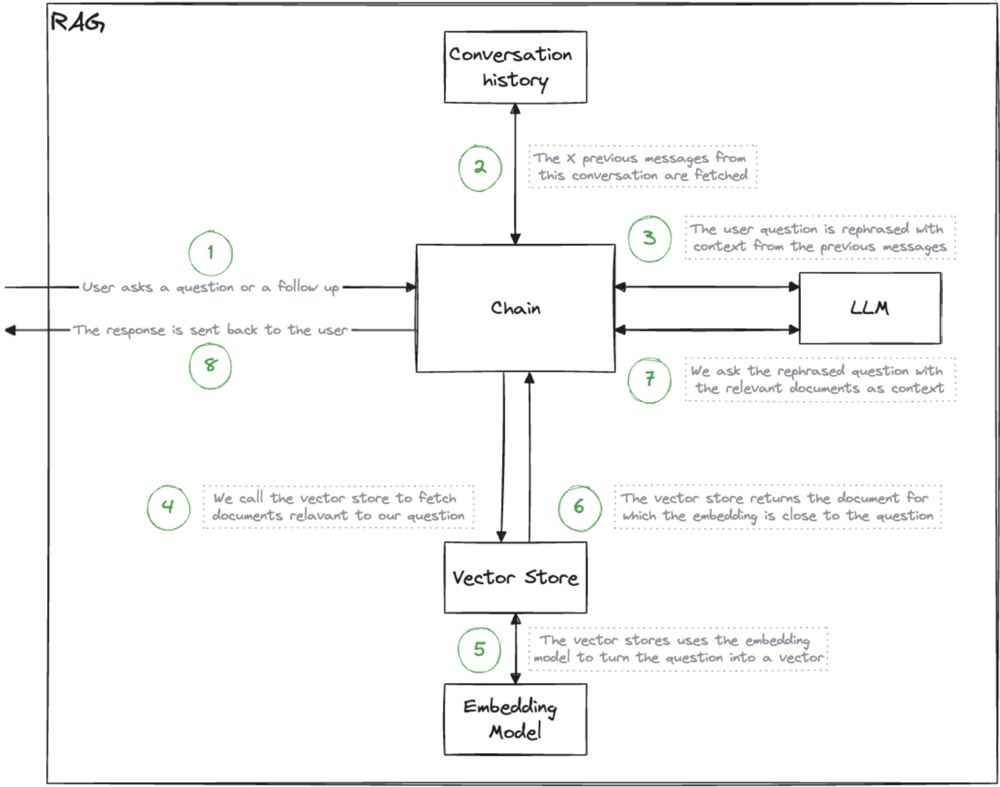

RAG and RAGConfig classes
The RAG class¶
The RAG class orchestrates the components necessary for a retrieval-augmented generation pipeline. It initializes with a configuration, either directly or from a file.

The RAG object has two main purposes:
- loading the RAG with documents, which involves ingesting and processing documents to be retrievable by the system
- generating the chain from the components as specified in the configuration, which entails assembling the various components (language model, embeddings, vector store) into a coherent pipeline for generating responses based on retrieved information.
Loading and querying documents
1 2 3 4 5 6 7 8 9 10 11 12 13 14 15 | |
RAGConfig¶
Configuration of the RAG is done using the RAGConfig dataclass. You can instanciate one directly in python, but the preferred way is to use the backend/config.yaml file. This YAML is then automatically parsed into a RAGConfig that can be fed to the RAG class.
The configuration provides you with a way to input which implementation you want to use for each RAG components:
- The LLM
- The embedding model
- The vector store / retreiver
- The memory / database
Zooming in on the LLMConfig as an example:
1 2 3 4 5 | |
sourceis the name of name of the langchain class name of your model, either aBaseChatModelorLLM.source_configis are the parameters used to instanciate thesource.temperatureregulates the unpredictability of a language model's output.
Example of a configuration that uses a local model served with Ollama. In backend/config.yaml:
1 2 3 4 5 | |
Configuration recipes
You can find fully tested recipes for LLMConfig, VectorStoreConfig, EmbeddingModelConfig, and DatabaseConfig in the Cookbook.
This is the python equivalent that is generated and executed under the hood when a RAG object is created.
1 | |
You can also write the configurations directly in python, although that's not the recommended approach here.
1 2 3 4 5 6 7 8 | |